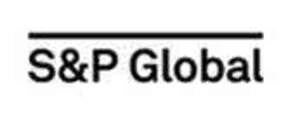

Trade Mark Journal No.2025/031 1 August 2025
UK00004201207 9 May 2025 (9,16,35,36,40,41,42)
Mark 1
Mark 2
Mark 3
Mark 4

Mark 5
Mark 6
- Class 9
- Downloadable computer software and mobile application software for accessing general news, business and financial information, financial indices, financial and credit ratings, market research, data analytics, stock prices, equity research, investment funds, risk solutions, investment data, and information concerning energy, commodities, metal pricing and metal market data, shipping, contracting, product and services ratings, and the financial, electronics, healthcare, homes, insurance, telecommunications, travel, and consumer products industries; Computer software for accessing and manipulating data in a financial database, and creating customized financial models, charts, analyses, and reports based on a financial database; Computer software that performs risk portfolio analytics and quantitative risk analyses.
- Class 16
- Trade magazines, pamphlets, brochures, and newsletters concerning general news, business and financial information, financial indices, financial and credit ratings, market research, data analytics, stock prices, equity research, investment funds, risk solutions, investment data, and information concerning energy, commodities, metal pricing and metal market data, shipping, contracting, product and services ratings, and the financial, electronics, healthcare, homes, insurance, telecommunications, travel, and consumer products industries .
- Class 35
- Advertising; business management; business administration; office functions; Business information, advisory, and consultation services; Providing business information online concerning general news, business and financial information, financial indices, financial and credit ratings, market research, data analytics, stock prices, equity research, investment funds, risk solutions, and investment data, and information concerning energy, commodities, metal pricing and metal market data, shipping, contracting, product and services ratings, and the financial, electronics, healthcare, homes, insurance, telecommunications, travel, and consumer products industries; Providing online information, news and commentary in the field of business on the subjects of commodities, energy, metals, and energy generation and production industries; Providing information and news in the field of business, namely, providing real-time information concerning the financial markets, financial indices, and financial ratings; Price comparing services in the field of commodities; Arranging and conducting business conferences, workshops, and exhibitions concerning general news, business and financial information, financial indices, financial and credit ratings, market research, data analytics, stock prices, equity research, investment funds, risk solutions, investment data, and information concerning energy, commodities, shipping, contracting, product and services ratings, and the financial, electronics, healthcare, homes, insurance, telecommunications, travel, and consumer products industries; Market research relating to general news, business and financial information, financial indices, financial and credit ratings, data analytics, stock prices, equity research, investment funds, risk solutions, investment data, and information concerning energy, commodities, metal pricing and metal market data, shipping, contracting, and the financial, electronics, healthcare, homes, insurance, telecommunications, travel, and consumer products industries; Conducting business and market research surveys; Providing on-line retail store services featuring software applications in the field of financial-related data and company data over a global computer network; Providing information, news and commentary in the field of business on the subjects of commodities, energy, metals, and energy generation and production industries.
- Class 36
- Financial services; monetary services; insurance services; real estate services; Providing and updating financial indices; financial data and stock research; providing and updating indexes of securities values; providing financial indices of select securities values to enable consumers to evaluate investments and market trends in the securities market; investment services; investment of funds; investment management and advisory services; financial analysis and advisory services; cryptocurrency trading services; financial and investment advisory services; financial and investment information services; financial consultation; Providing financial information, namely, information in the field of stock indices, securities indices, commodities indices, and other financial indices; Financial and investment information services, research services, data and data analytic services, and financial analyses; Providing real-time information relating to the financial markets; Providing financial information, research, analytics, and analyses regarding companies, industries, and countries; Providing financial information and data in support of merger and acquisition activities; Providing online financial information, namely, news in the field of financial information on commodities, energy, metals, and energy generation and production industries; News reporting services in the field of financial news, namely, providing real-time information concerning the financial markets, financial indices, and financial ratings; rating services, namely regarding performance of securities and investments and regarding credit worthiness; Providing information, studies, quality ratings, and opinions concerning the creditworthiness, performance, and other characteristics of debt instruments and commercial paper, namely, bonds, debentures, shares, warrants, options, investment certificates, and notes of corporations, governments, municipalities, public utilities, financial institutions, and other issuers; Providing financial and investment information via on-line computer databases; Providing financial information, namely, news in the field of financial information on commodities, energy, metals, and energy generation and production industries; Providing financial analyses and ratings of securities, investment funds, bonds, institutions, governments, and other financial instruments regarding performance, creditworthiness, risk assessments, and other characteristics; Providing information, studies, quality ratings, and opinions concerning investment funds; Financial risk management services; Pricing of commodities, namely, commodity quotations; Securities valuation services; Financial and investment consultation and advisory services; Investment services, namely, investment consultation in the fields of funds, mutual funds, real estate, commodities, capital, securities, bonds, and annuities .
- Class 40
- Providing information on the production of energy, the treatment of metals, and custom manufacturing of commodities.
- Class 41
- Providing non-downloadable articles and reports concerning general news, business and financial information, financial indices, financial and credit ratings, market research, data analytics, stock prices, equity research, investment funds, risk solutions, investment data, and information concerning energy, commodities, metal pricing and metal market data, shipping, contracting, product and services ratings, and the financial, electronics, healthcare, homes, insurance, telecommunications, travel, and consumer products industries via a website; Providing on-line publications in the nature of electronic books, magazines, and newsletters concerning the financial markets, financial indices, and financial ratings .
- Class 42
- Providing online non-downloadable software in connection with ratings of securities, investment funds, bonds, institutions, governments, and other financial instruments; Providing online non-downloadable software for tracking the performance of stock indices, securities indices, commodities indices, other financial indices, financial investments, securities, companies, and institutions; Providing temporary use of online non-downloadable software for providing access to streaming quotes, news, charts, and market views for use by the financial industry; Providing online non-downloadable software to measure, monitor, and manage credit risk, processes, and infrastructure by providing centralized data management, spreading, forecasting, and risk rating assessments.
S&P Global Inc.
Representative: Abion UK Limited